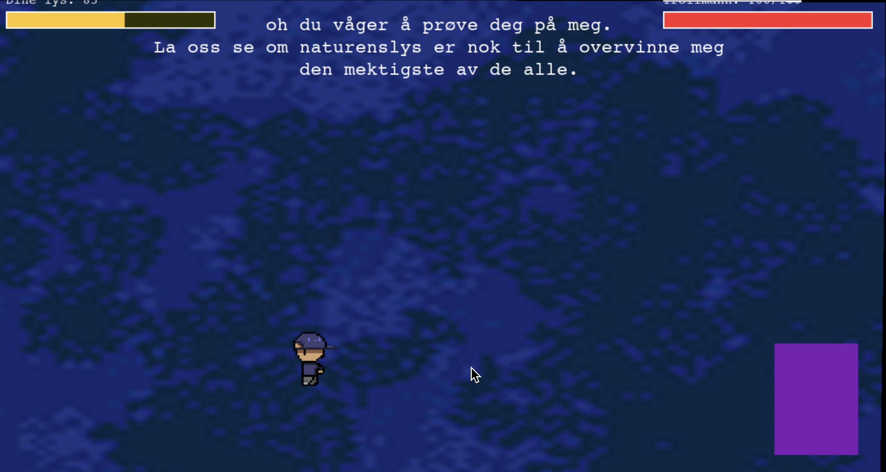

Fanous
Vil du hjelpe Rex med å bringe lyset tilbake til jungelen?

Vil du hjelpe Rex med å bringe lyset tilbake til jungelen?
Spill av og kjenn deg i jungelen ✦


Fanous er et spørsmålsspill som utfordrer din evne til å fokusere og samle nok poeng til å redde jungelen fra det onde monsteret Fanous. Et lite team bestående av tre utviklere og to designere skapte dette spillet i løpet av en helg under en game jam, basert på temaet vekst.
«Fanous» symboliserer opplysning, optimisme og veiledning i mørket. Ordet oversettes til «lykt» og bærer kulturell betydning som et fyrtårn gjennom usikkerhet. Lys representerer trygghet, fellesskap og muligheten til å navigere fremover til tross for omgivelsenes mørke.
Denne symbolikken ble kjernen i spillets narrativ: spilleren hjelper Rex med å bringe lyset tilbake til jungelen ved å besvare spørsmål og samle poeng.
«Siden dette var en game jam med bare én helg til utvikling, var det avgjørende å holde konseptet enkelt og fokusere på noen få tydelige mekanikker for å kommunisere veksttemaet.»
Jeg bidro med karakterdesign og visuelle elementer — spesifikt jungeldyr som uttrykker følelser som ensomhet og glede.
Tegnet jungeldyr med tydelig personlighet — enkle, lettleste og i tråd med en koselig estetikk.
Definerte spillets visuelle uttrykk: fargepalett, bakgrunner og UI-elementer som startskjerm og infoskjerm.
Jobbet tett med utviklerne under tidspress for å levere et gjennomført spill på én helg.
Skjermbilder og gameplay fra spillet


Å jobbe under stramme tidsrammer lærte meg å prioritere det essensielle og ta raske designbeslutninger. Prosjektet viste at enkle, gjennomtenkte løsninger kan skape sterke brukeropplevelser — selv uten uker med iterasjon.